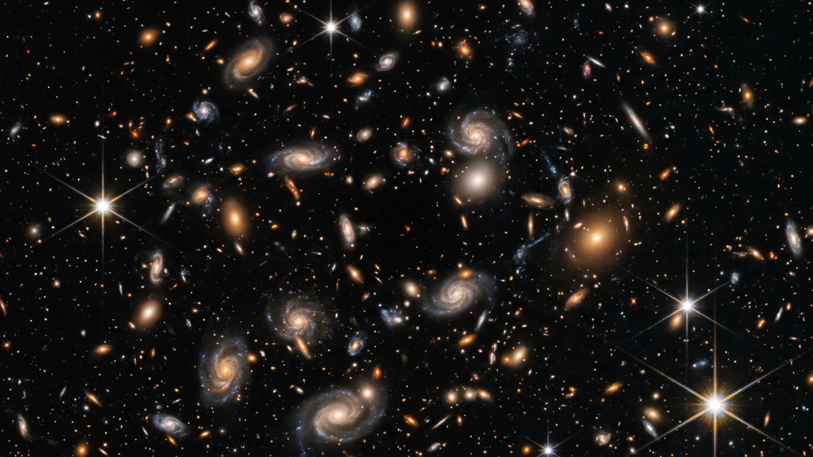
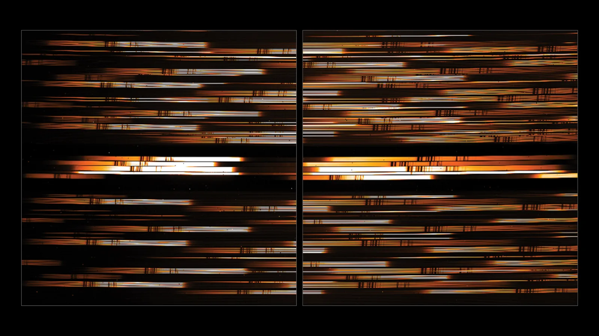
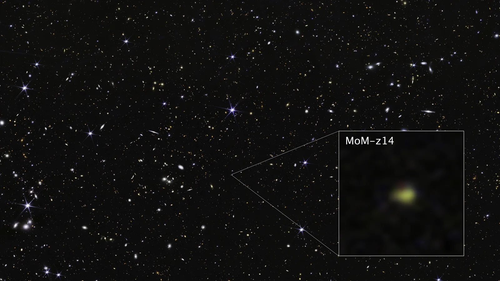
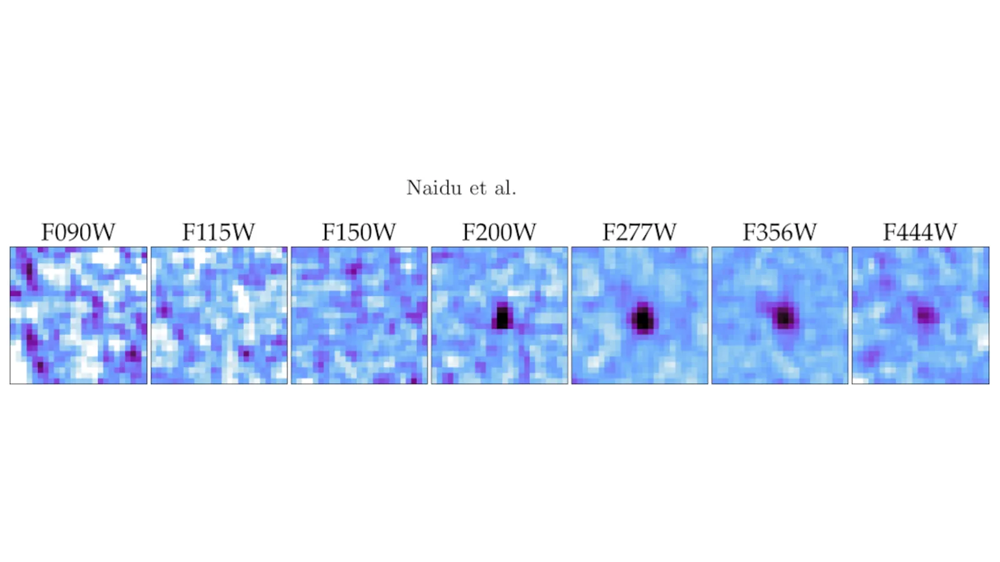
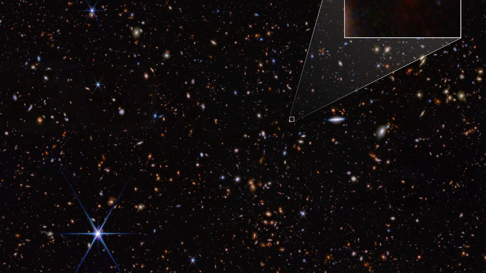
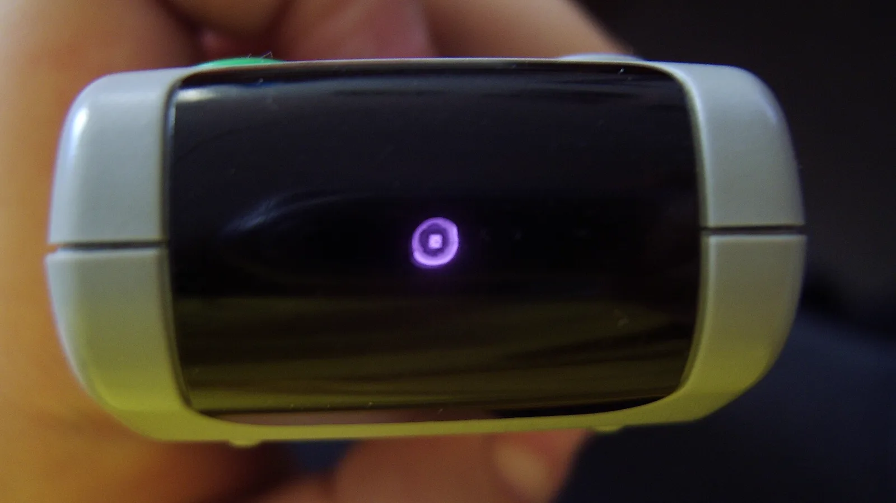

A galáxia mais distante
Em 8 de janeiro já existe galáxia. A mais distante já confirmada é a MoM-z14, e o que o telescópio mede nela não é a idade: é quanto a luz esticou. Um recorde que já caiu duas vezes.
No episódio anterior: a faixa das primeiras estrelas, de 3 a 8 de janeiro.

O que se mede, e com o quê

O que o telescópio mede
Não é a idade nem a distância: é o z, quanto a luz foi esticada pela expansão do universo.

Onde a luz cai
Candidata e confirmada
Pela imagem dá pra estimar: a MoM-z14 some nos filtros de comprimento de onda mais curto e só aparece a partir de uns 2 micrômetros. Mas quem confirma é o espectro.

O recorde que caiu duas vezes
E a surpresa: galáxias brilhantes tão cedo são cem vezes mais numerosas do que os estudos de antes do Webb previam.

A régua com os recordes
O controle remoto da TV
No próximo episódio: 22 de janeiro, a nossa galáxia começa. E como é que alguém lê a idade de uma estrela.
